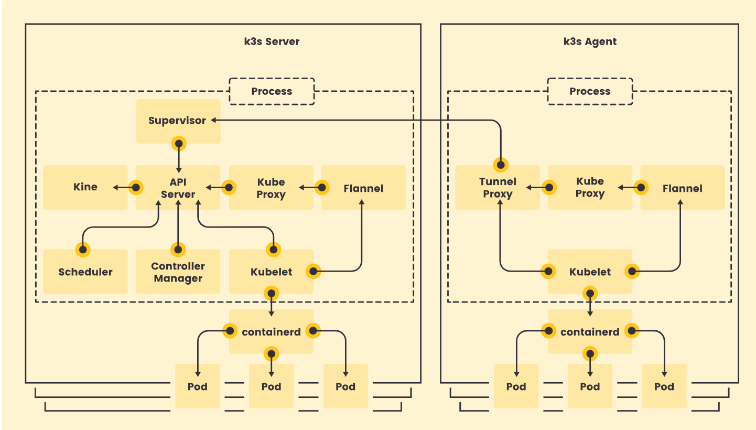

使用 K3s 快速搭建集群
提示：
1.本课程基于kubernetes V1.25版本。提示：
2.从V1.24开始，kubernetes默认容器运行时使用containerd，不再使用docker。
为什么使用 K3s
K3s 是一个轻量级的、的 Kubernetes 发行版本。非常适合初学者。 K3s 将所有 Kubernetes 控制平面组件都封装在单个二进制文件和进程中，文件大小<100M,占用资源更小，且包含了 kubernetes 运行所需要的部分外部依赖和本地存储提供程序。 K3s 提供了离线安装包，安装起来非常方便，可以避免安装过程中遇到各种网络资源访问问题。 K3s 特别适用于边缘计算、物联网、嵌入式和 ARM 移动端场景。
提示：
K3s完全兼容kubernetes，二者的操作是一样的，使用k3s完全满足我们学习kubernetes的要求，课程的最后，我们再使用kubeadm安装一个完整的集群。
离线安装 K3s 集群
K3s 集群分为 k3s Server(控制平面)和 k3s Agent(工作节点)。所有的组件都打包在单个二进制文件中。

运行环境
- 最低运行要求
- 内存: 512MB / CPU: 1 核心
- K3s 版本：v1.25.0+k3s1
- 集群规划
| 主机名 | IP 地址 | 配置 | 系统 | 网络 |
|---|---|---|---|---|
| k8s-master | 192.168.56.109 | 内存：2G CPU：2核 硬盘：20G |
CentOS 7.9.2009 最小化安装 |
互联网:NAT网络 内部网络: Host-only |
| k8s-worker1 | 192.168.56.111 | |||
| k8s-worker2 | 192.168.56.112 |
- ps
每个主机需要设置 hostname
- k8s-master
hostnamectl set-hostname k8s-master
- k8s-worker
# k8s-worker1
hostnamectl set-hostname k8s-worker1
# k8s-worker2
hostnamectl set-hostname k8s-worker2
1.准备工作
需要在每台机器上执行如下命令：
- 关闭防火墙
- 设置 selinux(需要联网)
systemctl disable firewalld --now
yum install -y container-selinux selinux-policy-base
yum install -y https://rpm.rancher.io/k3s/latest/common/centos/7/noarch/k3s-selinux-0.2-1.el7_8.noarch.rpm
2.下载安装包
下载安装脚本 install.sh：https://get.k3s.io/ 下载 k3s 二进制文件：k3s 下载必要的 image：离线安装需要的 image 文件
这些文件都可以在github仓库中获取：https://github.com/k3s-io/k3s
3.执行安装脚本
- 将
k3s二进制文件移动到/usr/local/bin 目录，并添加执行权限
mv k3s /usr/local/bin
chmod +x /usr/local/bin/k3s
- 将镜像移动到/var/lib/rancher/k3s/agent/images/目录（无需解压）
mkdir -p /var/lib/rancher/k3s/agent/images/
cp ./k3s-airgap-images-amd64.tar.gz /var/lib/rancher/k3s/agent/images/
- 在
k8s-master节点执行：
#修改权限
chmod +x install.sh
#离线安装
INSTALL_K3S_SKIP_DOWNLOAD=true ./install.sh
#安装完成后，查看节点状态
kubectl get node
#查看token
cat /var/lib/rancher/k3s/server/node-token
#K10c4b79481685b50e4bca2513078f4e83b62d1d0b5f133a8a668b65c8f9249c53e::server:bf7b63be7f3471838cbafa12c1a1964d
- 在
k8s-worker1和k8s-worker2节点执行
INSTALL_K3S_SKIP_DOWNLOAD=true \
K3S_URL=https://192.168.56.109:6443 \
K3S_TOKEN=K1012bdc3ffe7a5d89ecb125e56c38f9fe84a9f9aed6db605f7698fa744f2f2f12f::server:fdf33f4921dd607cadf2ae3c8eaf6ad9 \
./install.sh
排查错误
如果安装或启动不成功，可能有以下几个原因：
1. 时间不统一
2. IP有冲突，请为每个主机分配不同的IP
3. 主机名(hostname)重复，请为每个主机设置不同的主机名
4. 网卡的MAC有冲突，复制虚拟机时，请为所有网卡重新生产MAC地址
参考文档：
https://k3s.io/
https://rancher.com/docs/k3s/latest/en/
https://rancher.com/docs/k3s/latest/en/quick-start/
https://rancher.com/docs/k3s/latest/en/installation/airgap/